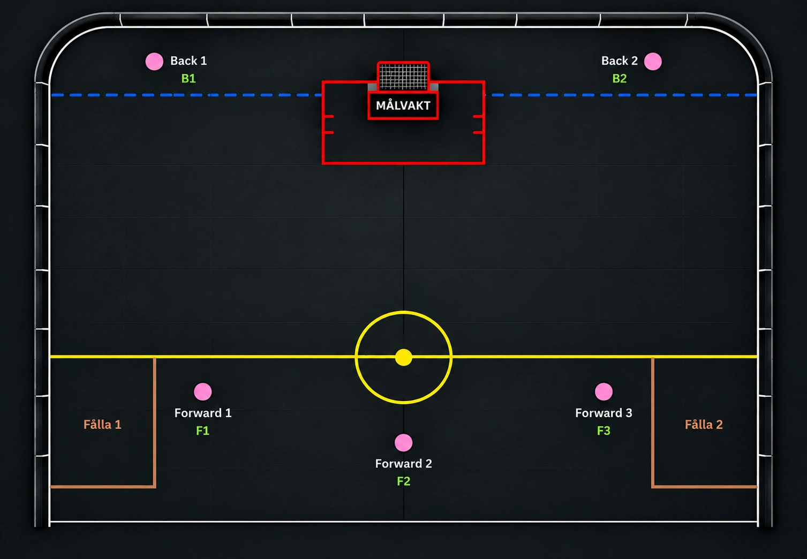

LagspelAnfall - Hitta fållan
En spelövning där anfallare och försvarare tränar på bollkontroll, samarbete och att vinna eller behålla bollen.
Syfte
Träna samarbete, speluppfattning och beslut under press.
Organisation
Placera spelarna enligt bilden. Två backar spelar mot tre forwards. Markera fållorna med sarg eller koner.
Genomförande
- Backar startar med att kliva ut i banan, där en av backarna spelar igång med ett "frislag" till forwards.
- Forwards försöker ta sig fram och göra mål mot målvakten. Man har övertag i antal spelare. Hitta fri spelare och gå mot mål.
- Backarna samarbetar för att vinna tillbaka bollen, vid bollvinst ska backar få in bollen i fållorna. Jobba med press och understöd.
- Avbryt och starta om med nästa spelare när bollen går ur spel enligt de regler ni bestämt.
- Se till så spelarna bytar positioner, för att träna på vanan.
Tränartips
Uppmuntra spelarna att prata med varandra, titta upp och hjälpa sin lagkamrat. Anpassa ytan och tempot efter gruppens nivå.